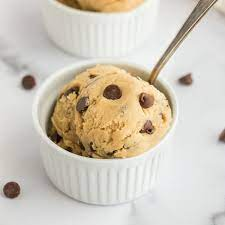

Edible Cookie Dough
Site Map

Link to original recipe
Ingredients
- 1 cup all-purpose flour
- 3/4 cup packed brown sugar
- 1/2 cup butter
- 1 teaspoon vanilla extract
- 1/2 teaspoon salt
- 2 tbsp milk
- 1/2 cup milk chocolate chips
- 1/2 cup mini chocolate chips
Directions
-
To heat-teat your flour so it is safe to use: Place flour in a
microwave-safe dish and cook for 1 minute and 15 seconds, stirring it every 15 seconds. Set aside.
-
Beat sugar and butter with an electric mixer in a large bowl until craemy. Beat in vanilla extract
and salt. Add heat-treated flour; mix until a crumbly dough forms. Stir in milk until dough is just
combined; fold in milk chocolate chips and mini chocolate chips.